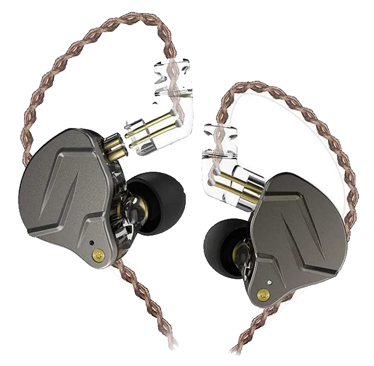

KZ ZSN Pro Earphone

Detailed Specification
- Steel faceplate with agressive design, available in black and silver color
- See-through inner resin makes the earphone look more unique, available in black, cyan, and magenta
- 2 pin detachable cable has a wide compatibility, also supports bluetooth cables
- Warm and precise bass, natural mids, and non-piercing highs
- Over ear design that perfectly fits your ear contours
- Pre-molded over ear guide cable, twin braided copper cable with mic included
Product Description
KZ ZSN is the best bang for the buck earphone out there. KZ ZSN has punchy and accurate bass, natural sounding mids, and non-piercing highs. Bass heavy songs will sound absolutely amazing in this earphone. Detachable 2-pin cable can be upgraded to bluetooth cable.
Price = Rp 200.000